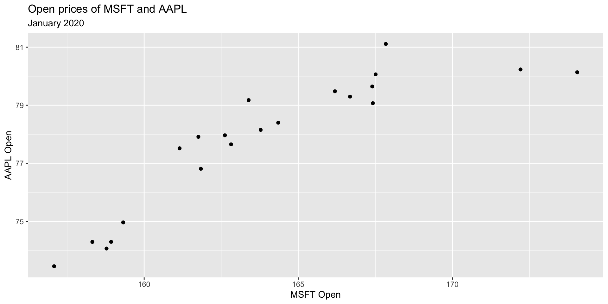
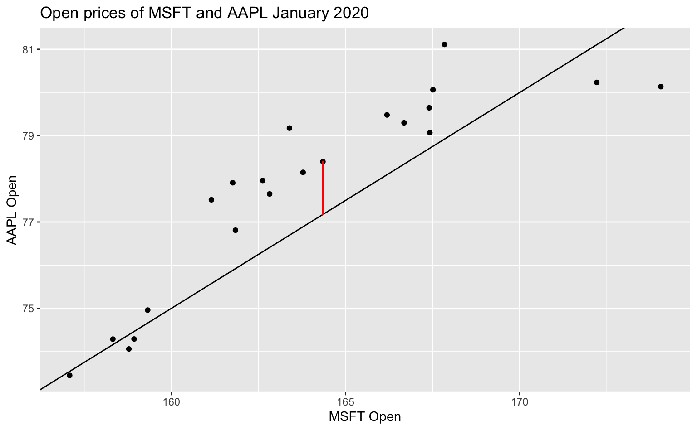
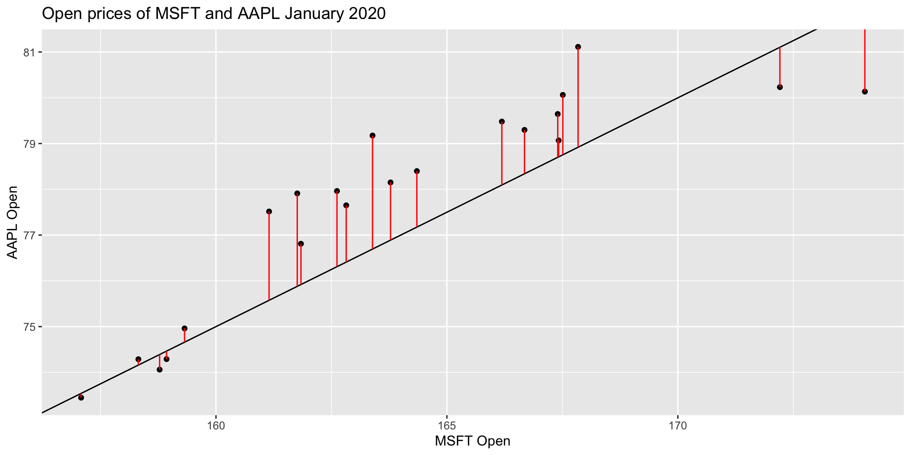

library(tidyverse)
library(tidymodels)
stocks <- read_csv("data/stocks.csv")Regression with a single predictor
Lecture 6
Warm up
Announcements
- Lab 3 is due Thu, Sep 21 at 5 pm on Gradescope
- No class on Wednesday, catch up on readings, interactive tutorials, labs!
Regression with a single predictor
Data and packages
We’ll work with data on Apple and Microsoft stock prices and use the tidyverse and tidymodels packages.
Simple regression model and notation
\[ y = \beta_0 + \beta_1 x + \epsilon \]
\(y\): the outcome variable. Also called the “response” or “dependent variable”. In prediction problems, this is what we are interested in predicting.
\(x\): the predictor. Also commonly referred to as “regressor”, “independent variable”, “covariate”, “feature”, “the data”.
\(\beta_0\), \(\beta_1\) are called “constants” or coefficients. They are fixed numbers. These are population parameters. \(\beta_0\) has another special name, “the intercept”.
\(\epsilon\): the error. This quantity represents observational error, i.e. the difference between our observation and the true population-level expected value: \(\beta_0 + \beta_1 x\).
. . .
Effectively this model says our data \(y\) is linearly related to \(x\) but is not perfectly observed due to some error.
Stock prices of Microsoft and Apple
Let’s examine January 2020 open prices of Microsoft and Apple stocks to illustrate some ideas.
stocks_jan2020 <- stocks |>
filter(month(date) == 1 & year(date) == 2020)
ggplot(stocks_jan2020, aes(x = MSFT.Open, y = AAPL.Open)) +
geom_point() +
labs(
x = "MSFT Open",
y = "AAPL Open",
title = "Open prices of MSFT and AAPL",
subtitle = "January 2020"
)
Fitting “some” model
Before we get to fitting the best model, let’s fit “some” model, say with slope = -5 and intercept = 0.5.
Fitting “some” model
\[ \hat{y} = \hat{\beta}_0 + \hat{\beta}_1 ~ x \\ \hat{y} = -5 + 0.5 ~ x \]
- \(\hat{y}\) is the expected outcome
- \(\hat{\beta}\) is the estimated or fitted coefficient
- There is no error term here because we do not predict error
Populations vs. samples
Population:
\[ y = \beta_0 + \beta_1 ~ x \]
Samples: \[ \hat{y} = \hat{\beta_0} + \hat{\beta_1} ~ x \]
- The central idea is that if we measure every \(x\) and every \(y\) in existence, (“the entire population”) there is some true “best” \(\beta_0\) and \(\beta_1\) that describe the relationship between \(x\) and \(y\)
- Since we only have a sample of the data, we estimate \(\beta_0\) and \(\beta_1\)
- We call our estimates \(\hat{\beta_0}\), \(\hat{\beta_1}\) “beta hat”. We never have all the data, thus we never can really know what the true \(\beta\)s are
Residuals
- For any linear equation we write down, there will be some difference between the predicted outcome of our linear model (\(\hat{y}\)) and what we observe (\(y\))… (But of course! Otherwise everything would fall on a perfect straight line!)
This difference between what we observe and what we predict \(y - \hat{y}\) is known as a residual, \(e\).
More concisely,
\[ e = y - \hat{y} \]
A residual, visualized
Residuals are dependent on the line we draw. Visually, here is a model of the data, \(y = -5 + 0.5 ~ x\) and one of the residuals is outlined in red.

All residuals, visualized
There is, in fact, a residual associated with every single point in the plot.

Minimize residuals
We often wish to find a line that fits the data “really well”, but what does this mean? Well, we want small residuals! So we pick an objective function. That is, a function we wish to minimize or maximize.
Application exercise
Go to Posit Cloud and start the project titled ae-06-Stocks.